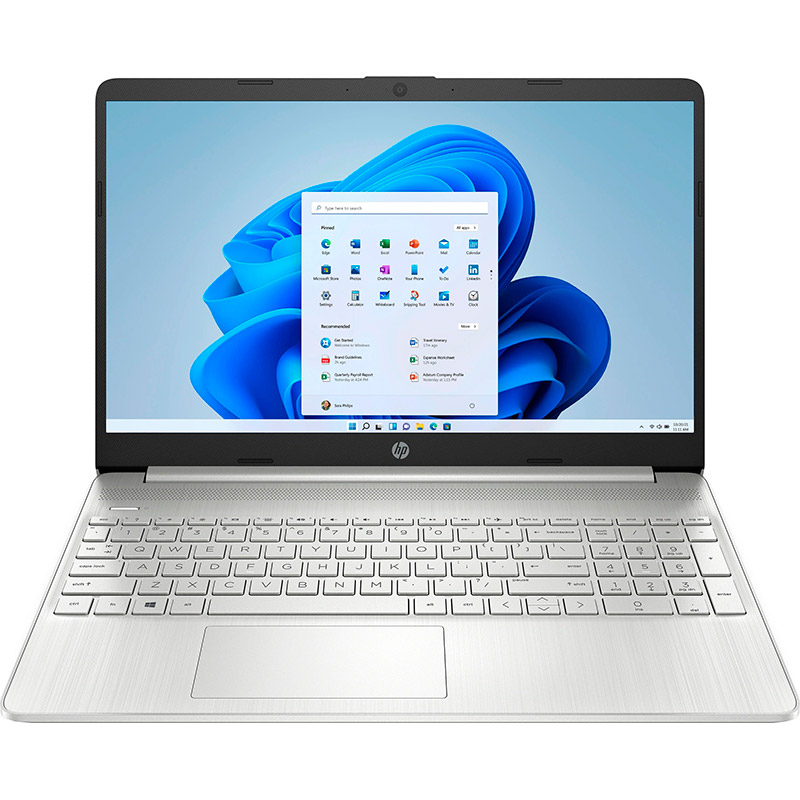

- Модельний ряд: HP 15
- Операційна система: Windows 11
- Версія Windows: Home
- Тип: Ультрабук
- Конструкція: Класична
- Екран:
- Діагональ дисплея: 15.6"
- Роздільна здатність дисплея: 1920 x 1080
- Тип матриці: IPS
- Частота оновлення екрана: 60 Гц
- Покриття дисплея: Антиблікове
- Яскравість екрана: 250ніт
- Процесор:
- Серія процесора: AMD Ryzen 3 / Ryzen 3 Pro
- Модель процесора: 3250U
- Базова частота процесора: 2.6ГГц
- Кількість ядер: 2
- Оперативна пам'ять/ОЗУ:
- Об'єм ОЗУ: 8 Гб
- Тип пам'яті: DDR4
- Частота пам'яті: 2400MHz
- Кількість слотів оперативної пам'яті: 1
- Накопичувачі даних/Жорсткий диск:
- Тип накопичувача: SSD
- Об'єм SSD диска: 256 Гб
- Відеокарта:
- Тип відеокарти: Інтегрована
- Модель відеокарти: Radeon Graphics
- Корпус:
- Вага: 1.69кг
- Габарити: 358.5 x 242 x 17.9мм
- Колір кришки: Сріблястий
- Матеріал корпусу: Пластик
- Акумуляторна батарея:
- Тип акумулятора: Li-Ion
- Кількість відділень акумулятора: 3
- Ємність акумуляторної батареї: 41Вт-год
- Інтерфейси:
- Бездротові комунікації: Wi-Fi; Bluetooth
- Стандарт Wi-Fi: IEEE 802.11 a/b/g/n/ac
- Порти та роз'єми: Карт-рідер; HDMI; Комбінований аудіо роз'єм
- Кількість портів USB 3.1 (3.2) Type-A: 2шт.
- Кількість портів USB 3.1 (3.2) Type-C: 1шт.
- Вбудоване додаткове обладнання:
- Оптичний привід: Відсутній
- Веб-камера: 1 Мп (HD)
- Конфігурація аудіосистеми: 2 динаміка